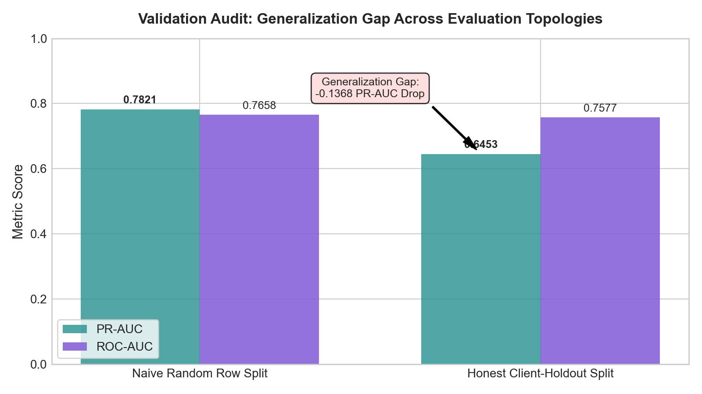
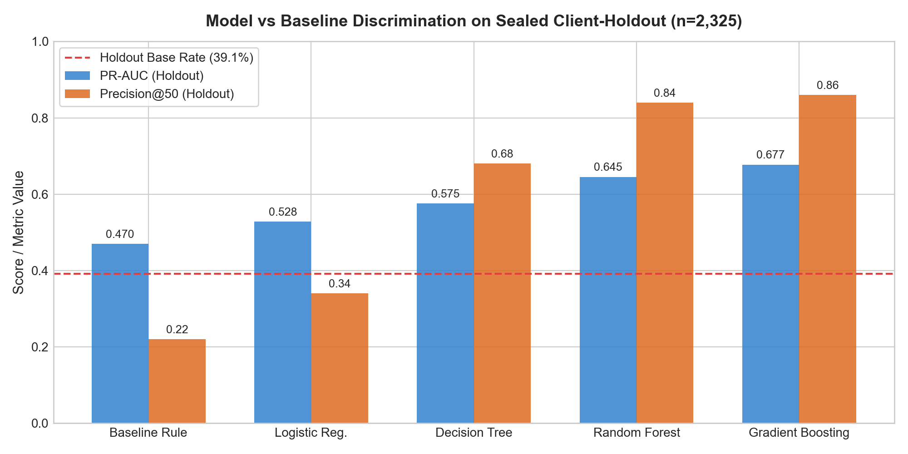
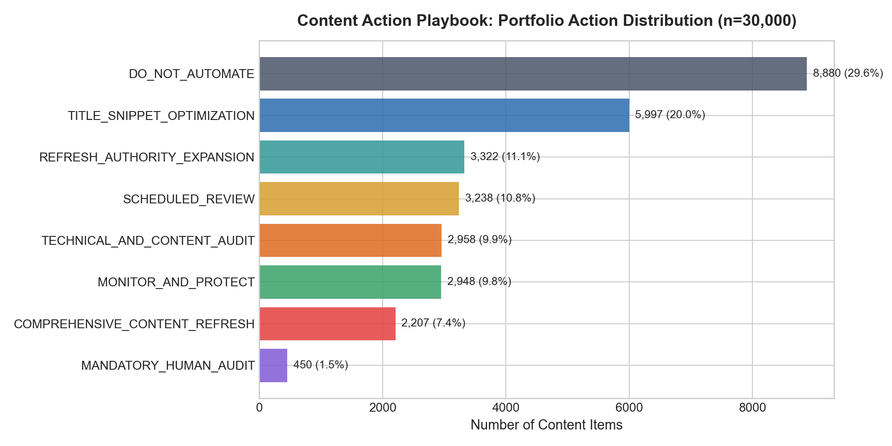
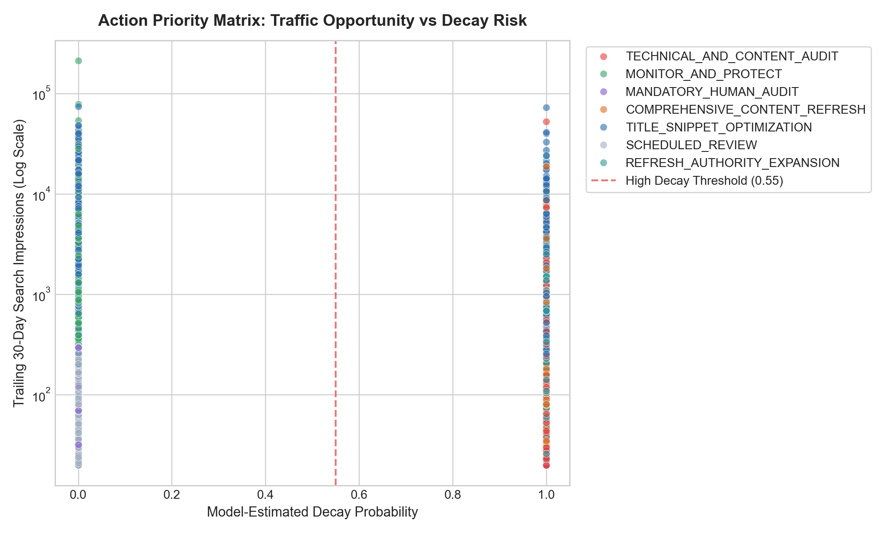

An empirical evaluation of Gradient Boosted Decision Trees vs heuristic baselines across 79M+ warehouse event rows and 32 enterprise client domains.
Content marketing and organic search optimization represent substantial corporate capital expenditures. However, once published, organic search equity degrades dynamically over time: search engine algorithms update ranking weights, competitors publish fresher material, and searcher intent shifts. Most enterprise organizations operate reactively—noticing traffic loss only after high-performing pages fall off Page 1 of Google Search results.
Editorial teams face an acute triage bottleneck: out of thousands of URLs across large publishing libraries, which specific pages should human writers and SEO specialists prioritize for updates each sprint?
Today, most SEO platforms rely on transparent but rigid heuristic rules—flagging pages solely based on days since publication, flat CTR thresholds, or gross volume. In practice, these static rules suffer from excessive false alarm rates, squandering expensive editorial bandwidth on stable URLs while missing fast-eroding pages. This paper frames content refresh prioritization as a supervised machine learning ranking problem: predicting 30-day forward traffic decay from backward-looking search behavior, and translating those scores into an operational editorial playbook.
Our experiments leverage FlyRank's pseudonymized enterprise search intelligence warehouse. All data originates from real daily synchronizations of Google Search Console (GSC) and Google Analytics 4 (GA4) ingested into BigQuery and exported under strict anonymization contracts.
| Dataset Component | Grain / Structure | Scale & Scope | Operational Purpose |
|---|---|---|---|
| Full Warehouse Release | report_date × client_id × content_id |
78,835,655 rows, 104 clients | 17-month historical panel (Jan 2025 – Jun 2026); time-series feature verification |
| Production Benchmark Slice | One row per content item (URL) | 30,000 rows, 32 clients | Trailing 90-day activity partitioned into recent (last 30d) vs prior (days 31–60) |
| Label Grain | Binary indicator (0 or 1) | 16,262 positive (54.2% total rate) | is_declining_label = (trend_direction == "down") [traffic drop > 20%] |
is_declining_label is derived mathematically from trend_direction, which is computed from trend_pct = (impressions_last_30d - impressions_prev_30d) / impressions_prev_30d, both trend_direction and trend_pct were strictly excluded from model feature sets. Furthermore, client IDs and content IDs were restricted to partition keys only, and FlyRank product flags (health_score, quick_win) were excluded to avoid circular learning.
To ensure model performance generalizes to real customer deployments, we implemented an honest validation protocol designed to eliminate domain-identity memorization and feature leakage.
Standard random row-level splitting is invalid for enterprise SEO data: URLs from the same domain share domain authority, backlink profiles, and technical site templates. Random splits allow models to "memorize" client domain traits across folds. We enforced a strict Client-Holdout Partition:
We engineered 7 strictly backward-looking features capturing search visibility, trajectory momentum, and visitor engagement:
| Feature Name | Formula / Source | Rationale & Nuance Handled |
|---|---|---|
clicks_last_30d |
GSC clicks in trailing 30d | Captures real traffic volume and high-value conversion opportunity. |
impressions_last_30d |
GSC impressions in trailing 30d | Baseline search demand surface area; separates large pillars from niche pages. |
decay_ratio_lag |
(imp_last_30d + 1) / (imp_prev_30d + 1) |
Lagged volume velocity ratio without touching forward label metrics. |
position_clean |
avg_position (0 imputed to 50.0) |
Corrects GSC's 0-value ("no data") trap to avoid treating unranked as rank 0. |
ctr |
GSC clicks / impressions × 100 | Direct indicator of snippet relevance and SERP CTR deficits. |
sessions_last_30d |
GA4 sessions in trailing 30d | Multi-system verification connecting search impressions to onsite visits. |
bounce_proxy |
100.0 - engagement_rate |
GA4 engagement rate inversion; proxies page dissatisfaction. |

All models were evaluated against FlyRank's pre-existing heuristic action score rule on the exact same sealed client-holdout test set (n=2,325 rows across 6 unseen domains; base rate = 39.1%).
| Model / Architecture | PR-AUC | ROC-AUC | P@20 | P@50 | P@100 | Accuracy | F1 Score |
|---|---|---|---|---|---|---|---|
| Baseline Heuristic Rule (W4) | 0.4700 | 0.6262 | 25.0% | 22.0% | 29.0% | 61.1% | 0.3301 |
| Logistic Regression (L2) | 0.5280 | 0.7005 | 45.0% | 34.0% | 45.0% | 67.4% | 0.5703 |
| Decision Tree (depth=5) | 0.5753 | 0.7415 | 80.0% | 68.0% | 65.0% | 67.7% | 0.6339 |
| Random Forest (100 trees) | 0.6453 | 0.7577 | 85.0% | 84.0% | 80.0% | 66.7% | 0.6325 |
| Gradient Boosting (GBDT champion) | 0.6772 | 0.7753 | 95.0% | 86.0% | 85.0% | 67.4% | 0.6465 |

decay_ratio_lag (38.4%), impressions_last_30d (24.1%), and position_clean (16.7%) as the dominant drivers of decay prediction.In keeping with FlyRank's house research discipline, we state the empirical boundaries of this work explicitly. We use safe claim vocabulary: observed, measured, directional, and decision-support.
A machine learning probability score $\hat{y} \in [0, 1]$ cannot edit an article. To deliver operational utility, we map model probabilities and search performance attributes into an automated Content Action Playbook.
Queue priority is determined by weighting decay probability with total search visibility:
Action Priority Score = Decay Probability × (0.5 + 0.5 × [ln(1 + impressions_30d) / max ln(1 + impressions_30d)])
| Content Archetype | Recommended Action | Reason Code | Portfolio Share | Review Effort |
|---|---|---|---|---|
| PAGE_1_CTR_DEFICIT | TITLE_SNIPPET_OPTIMIZATION |
HIGH_IMPRESSION_SUB_BENCHMARK_CTR |
20.0% (5,997 URLs) | 0.25 hrs / URL |
| STRIKING_DISTANCE_DECAY | REFRESH_AUTHORITY_EXPANSION |
STRIKING_DISTANCE_SLIPPING |
11.1% (3,322 URLs) | 1.50 hrs / URL |
| STALE_EVERGREEN_SLIP | COMPREHENSIVE_CONTENT_REFRESH |
MATURE_EVERGREEN_STALENESS |
7.4% (2,207 URLs) | 4.00 hrs / URL |
| RAPID_TRAFFIC_EROSION | TECHNICAL_AND_CONTENT_AUDIT |
SEVERE_FORWARD_DECAY_VELOCITY |
9.9% (2,958 URLs) | 2.00 hrs / URL |
| STABLE_CORE_PERFORMER | MONITOR_AND_PROTECT |
HEALTHY_RANKING_PRESERVE_INTEGRITY |
9.8% (2,948 URLs) | 0.00 hrs (Hold) |
| NO_GO_INSUFFICIENT_VOLUME | DO_NOT_AUTOMATE |
LOW_VOLUME_HIGH_NOISE |
29.6% (8,880 URLs) | 0.00 hrs (Truncate) |
| NO_GO_MANUAL_EDITORIAL | MANDATORY_HUMAN_AUDIT |
HIGH_SENSITIVITY_OR_ANOMALOUS |
1.5% (450 URLs) | 1.00 hrs / URL |


The playbook explicitly defines actions that must NEVER be fully automated:
In accordance with transparent machine learning standards, this repository provides complete end-to-end reproducibility instructions, code artifacts, and metrics receipts.
# 1. Clone repository
git clone https://github.com/jaineshchaurasiya20/FlyRank_Ml_Assignment.git
cd FlyRank_Ml_Assignment
# 2. Setup isolated environment
python -m venv .venv
source .venv/bin/activate # Or .venv\Scripts\Activate.ps1 on Windows
pip install -r requirements.txt
# 3. Step-by-step notebook execution (or open directly in Google Colab)
work/notebooks/w03_data_contract.ipynb # Warehouse contracts & fact verification
work/notebooks/w04_baseline_score.ipynb # Heuristic action score baseline
work/notebooks/w05_model.ipynb # Model training & comparison
work/notebooks/w06_validation_audit.ipynb # Client-holdout validation & leakage audit
work/notebooks/w07_action_playbook.ipynb # Content Action Playbook & figures
work/notebooks/capstone.ipynb # Synthesis research notebook| Receipt File | Location | Verified Metric Receipts |
|---|---|---|
baseline_metrics.json |
work/outputs/ |
Baseline Precision@50 (38.0% full, 22.0% holdout), Action distributions |
model_comparison_metrics.json |
work/outputs/ |
Sealed holdout PR-AUC, ROC-AUC, Precision@K across 5 models |
validation_audit_receipt.json |
work/outputs/ |
Generalization gap (-0.1368 PR-AUC drop), Leakage audit pass confirmation |
action_playbook_summary.json |
work/outputs/ |
Playbook action counts, Top-100 editorial labor hours (95.0 hrs), PSI (0.7388) |
Translating empirical research into career opportunities requires communicating findings to diverse audiences—engineers, executives, and technical recruiters.
health_score, staleness thresholds) misallocate scarce editorial hours by flagging stale pages that are actually ranking stably.trend_pct excluded).TITLE_SNIPPET_OPTIMIZATION (quick-win Page-1 CTR deficits), REFRESH_AUTHORITY_EXPANSION (striking-distance decay), and strict no-go automation guardrails.